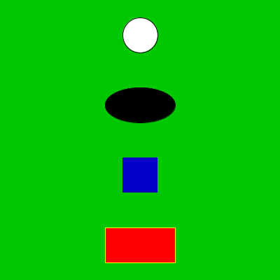
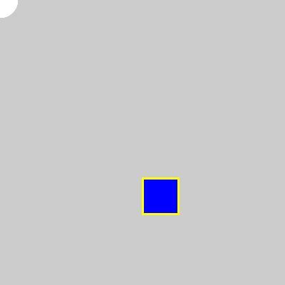
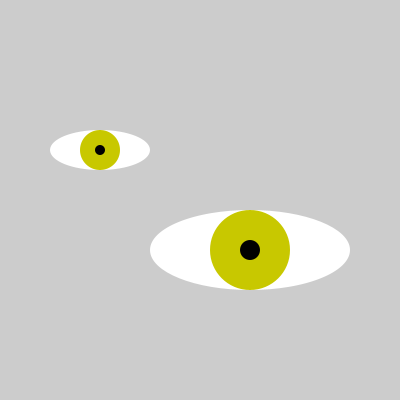
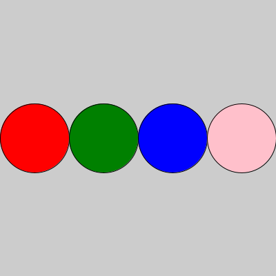
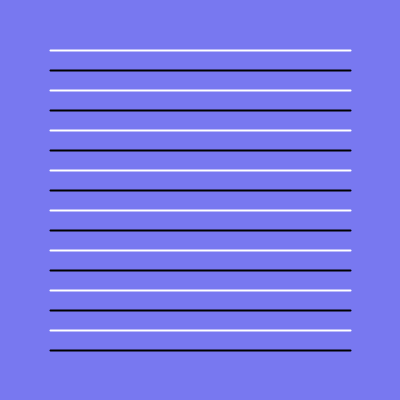
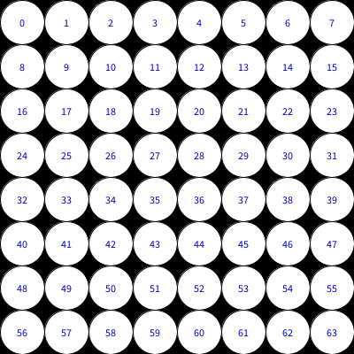
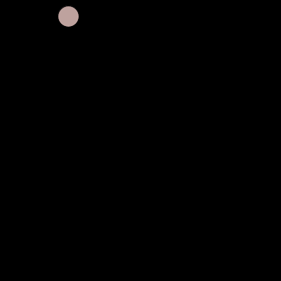
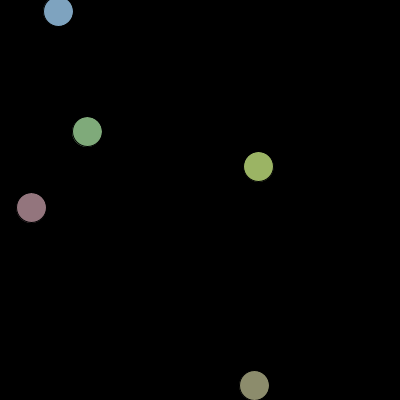

100 - primeiros passos
 Indentação e um retângulo usando a função size() dentro do setup()
Indentação e um retângulo usando a função size() dentro do setup() Usando variáveis atribuição e reatribuição
Usando variáveis atribuição e reatribuição- Desenho, formas e cores Formas básicas, cores de preenchimento e traço
- Desenho, cor e a interação com o mouse Formas básicas, preenchimento, traço e interação usando draw()
- círculo movendo animação usando variável global
120 - funções
- Função olho Definindo uma função de desenho e a chamando.
130 - laços de repetição
 Laço simples Uma fila de elementos
Laço simples Uma fila de elementos- Pares e ímpares Usando o resto da divisão para alternar cores.
- Pares e ímpares Usando o resto da divisão para alternar cores.
- Pares e ímpares Usando o resto da divisão para alternar cores.
 Grade de círculos 1 calculando x e y de uma grade
Grade de círculos 1 calculando x e y de uma grade Tabuleiro de xadrez Grade com cores alternadas
Tabuleiro de xadrez Grade com cores alternadas- Grade numerada Usando itertools.product e text() para os números
400 - orientação a objetos
- Uma particula Exemplo de Orientação a Objetos
- Algumas particulas Exemplo de Orientação a Objetos
About this site
This website, maintained by Alexandre B A Villares and Luciano Ratamero, contains a tool based on previous work by Pamela Fox and other researchers that lets you work on Faded Parsons Problems, a type of programming exercise where you rearrange blocks of code and fill in blanks to create a working program. You can learn more about Faded Parsons Problems in Nate Weinman's CHI 2021 paper.The problems hosted here are all in Python 3 (via pyodide) and use drawing infrastructure provided by pyp5js, modified to use method names more similar to the py5 library for creative coding.
If you'd like to host your own problems, check the GitHub repository for more instructions or to contact the maintainer.
Sobre este site
Esta página, mantida por Alexandre B A Villares e Luciano Ratamero, contém uma ferramenta baseada em um trabalho anterior de Pamela Fox e outras pessoas pesquisadoras que permite trabalhar com quebra-cabeças de Parsons com lacunas (faded), um tipo de exercício de programação em que você deve reordenar bolcos de código e prencher as lacunas para produzir um programa que funciona. Saiba mais sobre Parsons Problems em Nate Weinman's CHI 2021 paper. Os quebra-cabeças aqui hospedados são em Python 3 (via pyodide) e usam a infraestrutura de desenho do projeto pyp5js, modificado para que os nomes ficassem mais parecidos com a biblioteca py5 voltada à programação criativa.
Se você quiser publicar você mesmo seus próprios quebra-cabeças, veja mais instruções no repositório no GitHub. As instruções estão em inglês, mas se tiver dúvidas você pode entrar em contato com o mantenedor.